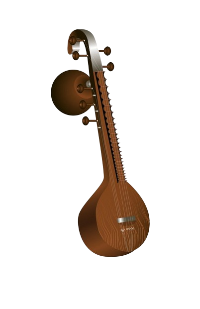

The sitar, a mesmerizing stringed instrument originating from the Indian subcontinent, stands as a testament to
centuries of cultural richness and artistic finesse. Its elegant form, with a long, hollow neck adorned with intricate
carvings, and a rounded resonating chamber, captivates both the eye and the ear. Atop its slender neck rests a series of
movable frets, allowing for a vast array of melodic expressions.
What truly sets the sitar apart is its distinctive sound, which is both evocative and entrancing. When plucked, the
strings produce a twangy resonance that seems to echo through time, carrying with it the essence of ancient ragas and
timeless melodies. Each note, imbued with a rich harmonic depth, seems to resonate with the very soul of its player and
listener alike.
The sitar's versatility is as remarkable as its aesthetic appeal. From delicate, introspective compositions to lively,
rhythmic improvisations, it can effortlessly traverse the spectrum of human emotion. In the hands of a skilled musician,
it becomes a conduit for storytelling, weaving narratives of love, longing, and spiritual transcendence.
Beyond its musical prowess, the sitar embodies a cultural heritage that spans generations. Its presence in classical
Indian music is deeply intertwined with the country's history and traditions, yet its influence extends far beyond
geographical boundaries. As it continues to find its place in contemporary music, the sitar remains a symbol of unity,
bridging gaps between cultures and connecting hearts through the universal language of melody.
|  | |
| String instrument | |
|---|---|
| Classification | Necked bowl lutes String instrument |
| Hornbostel-Sachs classification | 321.321 |
| Developed | 18th century |
| Related instruments | |
| Sitar , Pandura , Surbahar , Rudra veena , Saraswati veena | |
The sitar instrument was developed in the 1700s following the Mughal Empire, taking elements from the instruments Veena,
Sehtar, and Tanpura that were popular at the time. The instrument was also inspired by long neck lutes that originated
from Central Asia. Following its inception, the instrument gained popularity in Hindustani and Carnatic music, achieving
its modern form in the 18th century.
The invention of the sitar we know today is credited to Amir Khusrau, an 18th-century fakir. Khusrau's grandson, Masit
Khan, continued his grandfather's influence on the sitar and its music. The playing style of Masitkhani Gat was named
for his slow, melodic compositions that influenced much of early sitar music. In the 19th century, the sitar underwent
design changes by Amrit and Rahim Sen that are still in use today.
The 20th century saw significant changes to the sitar, namely the two distinct instrument types named for modern Sitar
pioneers. The Ravi Shankar and the Vilayat Khan are both similar but have key differences that can be found in the next
section. Additionally, an electric sitar was developed in the 1960s and is typically used in pop, rock, and jazz music.
There are two types of Sitar musical instruments, each named after a famous sitar player from the 20th century. In
addition to these two main types of Sitars, there are countless variations and individualized instruments, both in
construction and decorative design, as well as bass and electric Sitars.
There are two types of sitars. They are,
The first type is an instrumental style named for Ravi Shankar (RV). These sitars feature a second resonator made from a
smaller gourd that is located at the top of the neck, and attached to the back of the instrument. The RV is typically
fully decorated with carvings and inlays and features extra bass strings, which produce a deeper sound.
The second is a Gayaki-style Sitar, called a Vilayat Khan (VK). The VK sitar is smaller, less ornamental, and features
just one resonator gourd. The VK also has fewer sympathetic strings and no bass strings. This type of sitar has an
additional string called a chickaree, which produces a rhythmic accompaniment. The Vilayat Khan sitar is favored by the
Etawa Gharana school of sitar playing.
The bass sitar, or surbahar, is larger than the two traditional types of sitars and uses thicker strings that produce a
lower sound. The bass sitar has a wider neck and fretboard, allowing for the larger strings to be played without
interference from the other strings. The electric sitar is not technically a sitar. The instrument is actually an
electric guitar that has a special bridge and sympathetic strings that allow it to mimic the sound of a sitar.
The Sitar is typically played while sitting with the instrument balanced between the musician's foot and knee. Because
the instrument is typically quite large, this allows the player's hands to move freely without having to support the
weight of the instrument. Players use a metal pick, or mihrab, to pluck the strings while anchoring their thumb on top
of the fretboard.
Like many instruments, alternate playing techniques vary by school and individual. Some of the most common of those
techniques are outlined below.
Meend, or mir, is a way for the player to glide between one note and another. Also called string bending, this technique
is achieved by pushing or pulling the string against the curved fret. This creates a semitone, or half-step between one
pitch and another.
Krintan is an ornamental technique similar to a pull-off technique on a guitar. The player pulls the second finger off
the string being played while holding down their index finger on the fretboard just below. This motion can be used at
the beginning or end of a note and can be performed in reverse, similar to the hammer-on technique of a guitar. When
this technique is done on two strings at the same time, it's called zamzama.
A flat stroke is a technique that allows the player to strike the sympathetic strings while playing the main strings.
This can be done by striking the string in a Ra stroke while allowing the mihrab to strike the sympathetic strings. This
effect can also be achieved by using the pinky of the left hand to flick the sympathetic strings while playing the main
strings with the right hand.
Like playing techniques, there are also different techniques for holding the instrument, individual to the player. While
the most popular position is to sit on a flat surface with the legs crossed, there are other ways to hold it. The sitar
can also be played while kneeling or sitting in a chair and can be modified to be played by right- or left-handed
musicians.
There are many exceptional sitar players, past and present. Below are some of the most talented and well-known sitar players around the world.
Charmie Weerapperuma 2024 | © All Rights Reserved